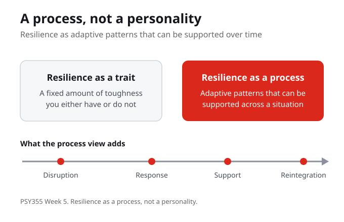

What Do You Know?
1. This week understands resilience mainly as:
2. The central question for the week is:
3. In Richardson's model, resilience is described as:
4. Ungar's social ecology of resilience frames resilience as:
5. The week's practice activity asks students to build a four part resilience map for:
6. Treating resilience as a process rather than a trait helps students avoid:
7. A resilience map asks you to read a situation in terms of:
Purpose and Learning Outcomes
The purpose of this week is to connect psychological theory to practical learning, well being, and resilience. The work stays grounded in course sources and uses everyday academic examples so the concepts can travel beyond class.
By the end of this week you should be able to
- Explain resilience as an adaptive process.
- Compare two models of resilience.
- Use a resilience map without treating difficulty as personal failure.
Guiding Questions
- What changes when resilience is understood as a process rather than a trait?
- What does this week show about resilience process?
- Where does the model help, and where does it need context?
- What is one concrete action a student could try without pretending the barrier is simple?

Resilience as Process, Not Personality
This week shifts resilience away from toughness and toward adaptive patterns that can be supported. When resilience is treated as a personality trait, it looks like a fixed amount of toughness you either have or do not. When it is treated as a process, it becomes a sequence you can read and support: a disruption, a response, the support around it, and a reintegration. The central question is what changes when resilience is understood as a process rather than a trait.
Treated as a trait, resilience is a fixed amount of toughness. Treated as a process, it becomes a sequence you can read and support, which is why the same week reframes difficulty away from personal failure.
What changes for a struggling student when resilience is read as a process rather than a fixed personality?

Richardson's Model of Resilience
Richardson gives us resilience as disruption, reintegration, and growth. A stressor disrupts a settled balance, the person responds and reorganizes, and that reintegration can end in a stronger balance than before. The point is that recovery is a path through stages, not a private verdict on how tough a person is. Reading the stages is what lets us ask where support could change which reintegration becomes possible.
Richardson frames resilience as disruption, reintegration, and growth. Recovery becomes a path through stages, which is what makes it something support can act on rather than a fixed personal quality.
In Richardson's terms, name a recent disruption and the reintegration that followed it. Where could support have changed the outcome?
Ungar and the Social Ecology of Resilience
Ungar gives us the social ecology of resilience. Resilience is a contextual and cultural process, not a quality located only inside the individual. Whether a person can reintegrate depends on the resources around them and on how those resources fit their context and culture. This is where a model that looks only at the individual needs context added back in, because the same response can succeed or fail depending on what is available to support it.
Ungar locates resilience in context and culture, not only inside the person. Whether reintegration is possible depends on the resources around someone and on how those resources fit their situation.
Where does an individual model of resilience help, and where does it need the context Ungar adds?
Resource and Why It Matters
A resource is what a process can draw on. In a resilience map, naming the resource is what keeps difficulty from looking like personal failure, because it moves the question from how tough is this person to what support is available here. Resource is also where the two models meet. Richardson describes the stages a person moves through, and Ungar reminds us that the resources around the person shape which reintegration the process can reach.
Naming the resource moves the question from how tough is this person to what support is available here. Resource is where Richardson's stages and Ungar's context meet.
For a recent challenge, what was one resource you drew on, even if you did not name it that way at the time?
Reading a Situation with the Resilience Map
Putting it together, the four part resilience map asks you to read a situation: what is the disruption, what is the response, what support exists, and what does reintegration look like. The map is used on a non private academic scenario, not as a personal disclosure task. The goal is one concrete action a student could try without pretending the barrier is simple, which keeps the process useful and honest at the same time.
The four part map reads disruption, response, support, and reintegration on a non private academic scenario. It aims at one concrete action without pretending the barrier is simple.
Map a non private academic scenario into disruption, response, support, and reintegration. What is one concrete action it points to?
What You Are Learning This Week
Resilience Is a Process, Not a Personality
This week shifts resilience away from toughness and toward adaptive patterns that can be supported. Treated as a trait, resilience is a fixed amount of toughness you either have or do not. Treated as a process, it becomes a sequence you can read and support.
Richardson Maps the Stages of Recovery
Richardson describes resilience as disruption, reintegration, and growth. A stressor disrupts a settled balance, the person responds and reorganizes, and that reintegration can end in a stronger balance. Recovery is a path through stages, not a verdict on how tough a person is.
Ungar Puts Resilience in Context
Ungar gives us the social ecology of resilience. Resilience is a contextual and cultural process, not a quality located only inside the individual. Whether reintegration is possible depends on the resources around a person and how those resources fit their context.
The Map Turns Theory into Action
A four part resilience map reads a situation as disruption, response, support, and reintegration. Used on a non private academic scenario, it keeps difficulty from looking like personal failure and points toward one concrete action without pretending the barrier is simple.
Connections to This Week
Earlier weeks built up motivation and self-efficacy, the belief that effort and capacity can grow. Those ideas treat the learner as someone who can act on a situation rather than someone fixed in place, which sets up the move from a fixed trait to a workable process.
Resilience is reframed as a process, not a personality. Richardson maps it as disruption, reintegration, and growth, while Ungar locates it in context and culture. The four part resilience map turns the theory into a way of reading a situation: disruption, response, support, and reintegration.
Once resilience is a process rather than a trait, the question turns to the social ecology of resilience: what resources a context makes available, how culture shapes which reintegration is possible, and how support around a person changes the outcome of the process.
Reflection Corner
This is not a separate assignment. Carry the question through the week. What support made a past recovery possible, even if you did not name it that way at the time, and what changes when you read that recovery as a process rather than proof of how tough you are?
Your notes save automatically on this device and stay after you close your browser or shut down. Use Save my notes (below) to download a copy you can keep or open on another device.
What You Now Know
What changes when resilience is understood as a process rather than a trait?
Richardson describes resilience as:
In Ungar's social ecology of resilience, resilience is best described as:
The four part resilience map asks you to name:
Read With These Questions
1What is the central argument or claim? Put it in one sentence.
2What evidence does the author use to support it?
3Which key concept or term carries the most weight, and how is it defined?
4What does the argument assume, and whose perspective might be missing?
5How does this reading connect to this week's topic and the other sources?
6Where do you agree, and where would you push back, and why?
7What is one question you still have after reading?
What to Do Next
Read Richardson on the Resilience Process
Read Richardson's metatheory of resilience for how resilience works as disruption, reintegration, and growth. Mark the sentence that best explains the central question, what changes when resilience is understood as a process rather than a trait.
Read Ungar on the Social Ecology of Resilience
Read Ungar for resilience as a contextual and cultural process. Notice where an individual model needs context added back in, and bring one question to class about how the concept works in real life.
Build a Four Part Resilience Map
For a non private academic scenario, map the disruption, the response, the support that exists, and what reintegration looks like. Decide on one concrete action a student could try without pretending the barrier is simple.
References
Richardson, G. E. (2011). Applications of the metatheory of resilience and resiliency in rehabilitation and medicine. Journal of Human Development, Disability, and Social Change, 19(1), 35 to 42. (Resilience as disruption, reintegration, and growth.)
Ungar, M. (2011). The social ecology of resilience: Addressing contextual and cultural ambiguity of a nascent construct. American Journal of Orthopsychiatry, 81(1), 1 to 17. (Resilience as a contextual and cultural process.)